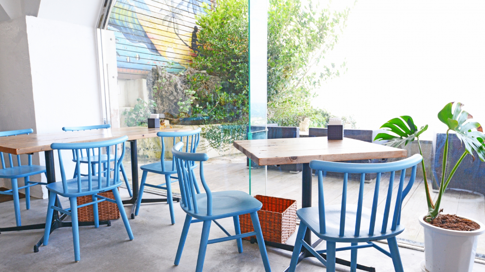

LuluCafeは、忙しい現代の人々に「ゆったりとした時間を過ごす」ことを大切にしてほしいという想いから生まれたカフェです。
青と白を基調とした明るい店内で、焼きたてパンとこだわりのコーヒーをお楽しみいただけます。
LuluCafeは忙しい現代の人々に「ゆったりとした時間を過ごす」ことを大切にしてほしいという想いから生まれたカフェ。
青と白を基調とした明るい店内で、焼きたてパンとこだわりのコーヒーをお楽しみいただけます。